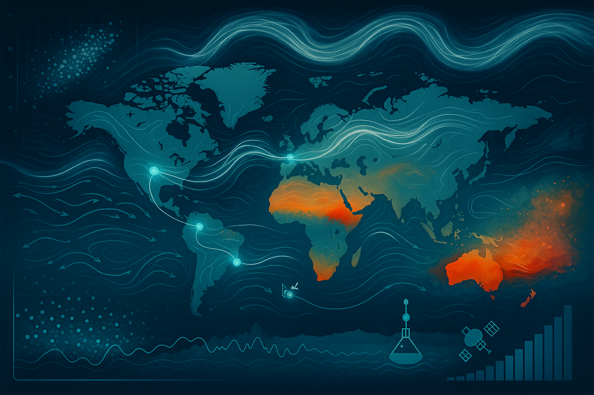

Peer-reviewed works reflecting my research on ocean–atmosphere dynamics:

Peer-Reviewed Publications
Bonel, J.C., Bodnariuk, N., Charo, G.D., Letellier, C., Saraceno, M. and Sciamarella, D., 2025.
Templex for Lagrangian dynamics in the Southwestern Atlantic.
Chaos: An Interdisciplinary Journal of Nonlinear Science
https://doi.org/10.1063/5.0255611